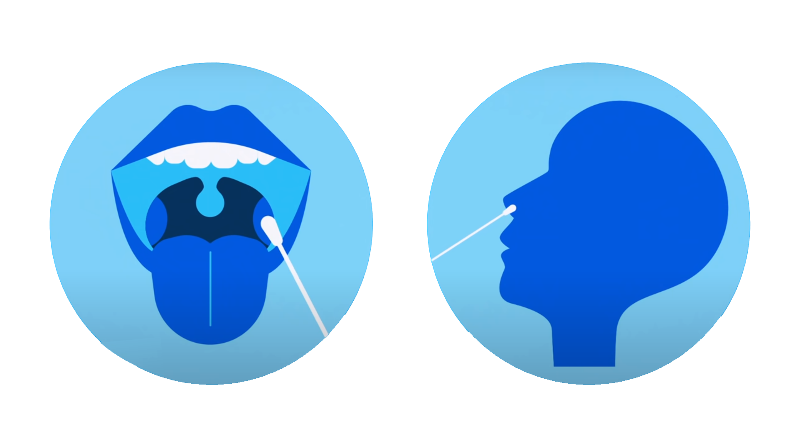
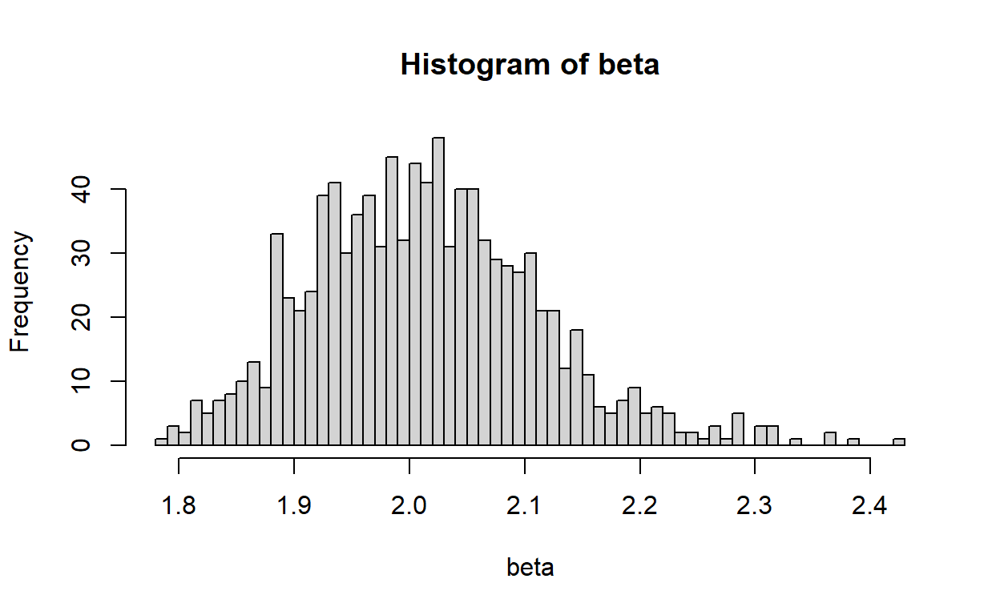

Testing your knowledge of testing

A researcher hypothesizes that year of schooling, S, may be related to the number of siblings (brothers and sisters) one has, SIBLINGS, according to the relationship \[S = \beta_{1}+\beta_{2}SIBLINGS+\epsilon\]
She is prepared to test the null hypothesis \(H0: \beta_{2}=0\) against the alternative hypothesis \(H1: \beta_{2}\neq 0\) at the 5 and 1 percent levels. She has a sample of 60 observations. What are the t-distribution values and what will she conclude in the following cases?
If \(\hat{\beta}_{2} = -0.20, \sigma_{\hat{\beta}_{2}}=0.07\)?
The t-value (rounded up to 3 decimal places) is:
Can she reject H0 at at the 5% significance level?
Can she reject H0 at at the 1% significance level?
If \(\hat{\beta}_{2} = -0.12, \sigma_{\hat{\beta}_{2}}=0.07\)?
The t-value (rounded up to 3 decimal places) is:
Can she reject H0 at at the 5% significance level?
Can she reject H0 at at the 1% significance level)?
If \(\hat{\beta}_{2} = 0.06, \sigma_{\hat{\beta}_{2}}=0.07\)?
The t-value (rounded up to 3 decimal places) is:
Can she reject H0 at at the 5% significance level?
Can she reject H0 at at the 1% significance level?
If \(\hat{\beta}_{2} = 0.20, \sigma_{\hat{\beta}_{2}}=0.07\)?
The t-value (rounded up to 3 decimal places) is:
Can she reject H0 at at the 5% significance level?
Can she reject H0 at at the 1% significance level?
Recall that the rejection threshold c for the normal distribution are 1.959964 and 2.5758293 for a 5% and 1% significance level. For the t distribution the same values are 2.0017175 and 2.663287 (Note that we have 58 degrees of freedom).
We can also work out p-values. Remember that the p-value is the probability - assuming the H0 is correct - to have a value more extreme (further away from 0) than the one estimated. We can use thept() command for that, which gives us the cumulative density function of the t-distribution; e.g. pt(0,58) gives us the probability to have a value smaller than 0. Because the t-distribution is symmetric that will always be equal to 0.5 Note that we have 58 degrees of freedom here as we 60 observations and we need to estimate 2 parameters (\(\beta_0\) and \(\beta_1\)). To work out the p-value call the pt() function with the t-value for a given estimate; e.g. for part a)
pt(-.2/0.07,58)
[1] 0.002962872i.e. the probability of having an estimate lower than -.2 is 0.0029629. Note, because the our test considers the possibility of being to low and too high (and because the distribution is symmetric) we need to double this to get the actual p-value which becomes 0.0059257. However, this is still below 1% so we can safely reject the hypothesis that the true parameter is 0. Note, if we estimate a positive value we still need to use the same value but in negative terms. So, more generally we could write that we need compute 2*pt(-abs(t),58); i.e. the negative of the absolute value of the t-value. Because pt() (like any cumulative density) sums to 1 and is symmetric and alterive formula with the same result would be 2*(1-pt(-abs(t),58))
</div>
<div class='solution'><button>Answer:</button>
Hence we get the following answers
1. t=-0.2/0.07= -2.857
Significantly different from 0 at 5 and 1 percent; i.e. we reject the H0 at either significance level.
2. t=-0.12/0.07= -1.714
Not significantly different from 0 at 5 and 1 percent; i.e. we don't reject the H0
3. t=0.06/0.07= 0.857
Not significantly different from 0 at 5 and 1 percent.
4. t=0.2/0.07= 2.857
Significantly different from 0 at 5 and 1 percent; i.e. we reject the H0 at either significance level.
</div>
# Exercise 4.2
Lets use the WAGE1.DTA dataset again!
<div class="layout-chunk" data-layout="l-body">
```r
library(foreign)
data <- read.dta("https://www.dropbox.com/sh/rqmo1hvij1veff0/AADZ4MZhDDk9R8sFSjBvmcRma/WAGE1.DTA?dl=1") Regress wages on education (years of schooling). Perform a test of the hypothesis that the coefficient on schooling is equal to 0.
Can you reject the hypothesis?
mod <- lm(wage~educ,data)
summary(mod)
Call:
lm(formula = wage ~ educ, data = data)
Residuals:
Min 1Q Median 3Q Max
-5.3396 -2.1501 -0.9674 1.1921 16.6085
Coefficients:
Estimate Std. Error t value Pr(>|t|)
(Intercept) -0.90485 0.68497 -1.321 0.187
educ 0.54136 0.05325 10.167 <2e-16 ***
---
Signif. codes: 0 '***' 0.001 '**' 0.01 '*' 0.05 '.' 0.1 ' ' 1
Residual standard error: 3.378 on 524 degrees of freedom
Multiple R-squared: 0.1648, Adjusted R-squared: 0.1632
F-statistic: 103.4 on 1 and 524 DF, p-value: < 2.2e-16i.e. t>2 and P very close to 0. Hence coefficient on education is highly significant (we can reject hypothesis that it is equal to 0).
Regress tenure (years with current employer) on education. Can you think of a causal mechanism that could support this specificiation?
Can you reject the hypothesis?
mod2 <- lm(tenure~educ,data)
summary(mod2)
Call:
lm(formula = tenure ~ educ, data = data)
Residuals:
Min 1Q Median 3Q Max
-6.946 -4.894 -2.601 1.520 38.813
Coefficients:
Estimate Std. Error t value Pr(>|t|)
(Intercept) 6.9457 1.4638 4.745 2.69e-06 ***
educ -0.1466 0.1138 -1.288 0.198
---
Signif. codes: 0 '***' 0.001 '**' 0.01 '*' 0.05 '.' 0.1 ' ' 1
Residual standard error: 7.22 on 524 degrees of freedom
Multiple R-squared: 0.003155, Adjusted R-squared: 0.001253
F-statistic: 1.659 on 1 and 524 DF, p-value: 0.1984i.e. there is a negative relationship: one year of extra education reduces tenure by 0.14 years. That said: this is not a significant relationship.
One reason why education might lead less tenure is that time is finite and being in education allows for less time to work on a job. Also: we are dealing here with time spend with the same employer. So it could be that employees that are more educated tend to change jobs more often (they might have more general skills that are in high demand by various employers). As a consequence they accumulate less time with a specific employer.
Lets go back to the auto dataset.
library(foreign)
data <- read.dta("https://www.dropbox.com/sh/rqmo1hvij1veff0/AACNkMy47ilXAMh3nmiIs_Bqa/auto.dta?dl=1")Draw a scatterplot of price versus weight. Which cars, in terms of weight, tend to be more expensive?
library(ggplot2)
ggplot(data, aes(x=price, y=weight)) + geom_point()Heavier cars tend to be more expensive.
Run a regression of price on weight.
What is the constant?
What is the slope coefficient?
mod<-lm(price~weight,data)
summary(mod)
Call:
lm(formula = price ~ weight, data = data)
Residuals:
Min 1Q Median 3Q Max
-3341.9 -1828.3 -624.1 1232.1 7143.7
Coefficients:
Estimate Std. Error t value Pr(>|t|)
(Intercept) -6.7074 1174.4296 -0.006 0.995
weight 2.0441 0.3768 5.424 7.42e-07 ***
---
Signif. codes: 0 '***' 0.001 '**' 0.01 '*' 0.05 '.' 0.1 ' ' 1
Residual standard error: 2502 on 72 degrees of freedom
Multiple R-squared: 0.2901, Adjusted R-squared: 0.2802
F-statistic: 29.42 on 1 and 72 DF, p-value: 7.416e-07What is the predicted price of a car weighing 2,500lb?
What is the predicted price of a car weighing 2,500lb?
value_to_forecast <- data.frame(weight=c(2500,4000))
forecast <- predict(mod,value_to_forecast)
mod$coefficients[[1]]+mod$coefficients[[2]]*2500
[1] 5103.449
mod$coefficients[[1]]+mod$coefficients[[2]]*4000
[1] 8169.543What is the expected price difference between two cars, one of which is 500kg(!) heavier?
mod$coefficients[[2]]*1102
[1] 2252.557What is the predicted price of a car weighing 500lb?
Do you think this number is very meaningful?
Why or why not? Check the answer below to see if you’re right.
mod$coefficients[[1]]+mod$coefficients[[2]]*500
[1] 1015.324The lightest car in the sample weighs 1760lb. It is unlikely to tell us much about a car weighing 500lb.
Conduct another Monter-Carlo expercise as in the previous exercise session (exercise session 2.3). Generate the \(\epsilon\) shocks as before. For the X, however, use the following command instead: x=unif(obs)*eps.
Otherwise take the same steps as in the previous Monte Carlo exercise, using the the same true model \(Y=2+0.5 X +\epsilon\). Produce a histogram to visualise your betas.
What average estimate for the coefficient associated with X do you find now? (Round up to the nearest whole number)
How does it relate to the true value of the coefficient of 0.5, is it larger or smaller?
obs <- 100
eps <- rnorm(obs)
x <- runif(obs)*eps
cor(x,eps) # Note that x and eps will be highly positively correlated
[1] 0.8636346
y <- 2+0.5*x+eps
mod<-lm(y~x)
summary(mod)
Call:
lm(formula = y ~ x)
Residuals:
Min 1Q Median 3Q Max
-1.34986 -0.32553 -0.06164 0.43712 2.13664
Coefficients:
Estimate Std. Error t value Pr(>|t|)
(Intercept) 2.12850 0.06158 34.56 <2e-16 ***
x 1.99589 0.08820 22.63 <2e-16 ***
---
Signif. codes: 0 '***' 0.001 '**' 0.01 '*' 0.05 '.' 0.1 ' ' 1
Residual standard error: 0.6155 on 98 degrees of freedom
Multiple R-squared: 0.8394, Adjusted R-squared: 0.8377
F-statistic: 512 on 1 and 98 DF, p-value: < 2.2e-16
beta <- double(1000)
cc = double(1000)
for(i in 1:1000){
eps <- rnorm(obs)
x <- runif(obs) *eps
y <- 2 + 0.5*x+eps
mod<-lm(y~x)
beta[i]<-mod$coefficients[[2]]
cc[i]=cor(x,eps)
}
hist(beta,50)
mean(beta)
[1] 2.007431
mean(cc)
[1] 0.867978i.e. the mean of beta is much larger than 0.5